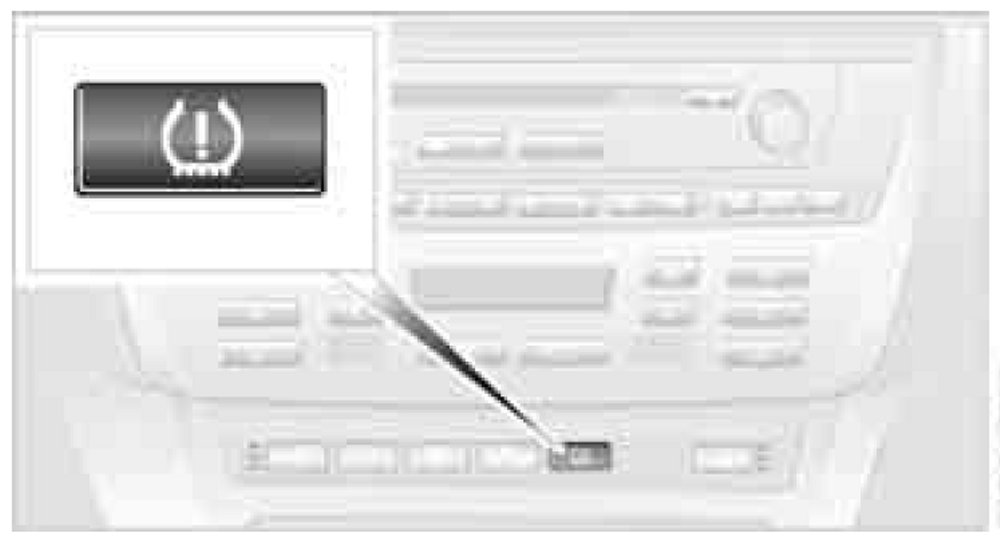

Reset Procedure
TPM Tire Pressure Monitor
The Concept
TPM controls the tire inflation pressure in the four mounted wheels. The system notifies you if the tire inflation pressure has fallen significantly in one or more tires.
Functional Requirement
To ensure the reliable signaling of a flat tire, the system must be reset at the correct tire inflation pressure.
Always use wheels equipped with TPM electronics, including a metal valve; otherwise, there is no guarantee that the system will function properly.
NOTE: The system must be reset after every correction of tire inflation pressure and after every tire or wheel change.
System Limits
CAUTION! TPM cannot warn you of sudden, serious tire damage due to external factors.
The system does not function properly if it has not been reset, e.g. it may identify a tire as flat in spite of the fact that the tire is filled to the correct inflation pressure.
The system is deactivated and is unable to detect flat tires if a wheel not equipped with TPM electronics has been mounted, e.g. a compact wheel, or if TPM is experiencing temporary interference from other systems or devices that use the same frequency.
Resetting System
NOTE: The system must be reset after every correction of tire inflation pressure and after every tire or wheel change.
1. Start engine, but do not begin to drive.

2. Press the button until the yellow warning lamp in the instrument cluster lights up for a few seconds.
3. Begin driving.
After a few minutes of driving, the tire inflation pressures in the tires are adopted as the desired values to be monitored. The resetting is completed during driving and can be interrupted at any time without requiring any input from you. The resetting automatically continues when driving resumes.
Low Tire Pressure Message
The warning lamp lights up yellow. In addition, a signal sounds. You have a flat tire or a significant loss of tire pressure in one or more tires.
1. Reduce speed and stop the vehicle carefully. Avoid sudden braking and steering maneuvers.
2. Identify the damaged wheel or wheels.
3. Replace the damaged wheel.
4. Check tire inflation pressure and correct as needed.
The compact wheel is not equipped with the required TPM electronics and is not monitored when mounted.
When driving with the compact wheel, the system indicates a malfunction. Have the damaged tire replaced.
Malfunction
The yellow warning lamp flashes and then lights up continuously. Flat tires cannot be detected.
Such a message is displayed in the following
situations:
- When a malfunction is occurring:
Have the system checked
- When a wheel without TPM electronics is mounted, e.g. a compact wheel
- When TPM is experiencing temporary interference from other systems or devices that use the same frequency
NHTSA/FMVSS-required explanation of 138 Tire Pressure Monitoring System
Each tire, including the spare, should be checked monthly when cold and inflated to the inflation pressure recommended by the vehicle manufacturer on the vehicle placard or tire inflation pressure label. If your vehicle has tires of a different size than the size indicated on the vehicle placard or tire inflation pressure label, then you should determine the proper tire inflation pressure for those tires. As an added safety feature, your vehicle has been equipped with a tire pressure monitoring system, TPMS, that illuminates a low tire pressure warning lamp when one or more of your tires are significantly underinflated. When the low tire pressure warning lamp lights up, you should stop and check your tires as soon as possible, and inflate them to the proper pressure. Driving on a significantly underinflated tire causes the tire to overheat and can lead to tire failure. Underinflation also reduces fuel efficiency and tire tread life, and may affect the vehicle's handling and stopping ability. Please note that the TPMS is not a substitute for proper tire maintenance, and it is the driver's responsibility to maintain correct tire pressure, even if underinflation has not reached the level to trigger illumination of the TPMS low tire pressure warning lamp.
The TPMS malfunction indicator is combined with the low tire pressure warning lamp. When the system detects a malfunction, the warning lamp will flash for approximately one minute and then remain continuously illuminated. This sequence will continue upon subsequent vehicle startups as long as the malfunction exists. When the malfunction indicator is illuminated, the system may not be able to detect or signal low tire pressure as intended. TPMS malfunctions may occur for a variety of reasons, including the installation of replacement or alternate tires or wheels on the vehicle that prevent the TPMS from functioning properly. Always check the TPMS malfunction warning lamp after replacing one or more tires or wheels on your vehicle to ensure that the replacement or alternate tires and wheels allow the TPMS to continue to function properly.